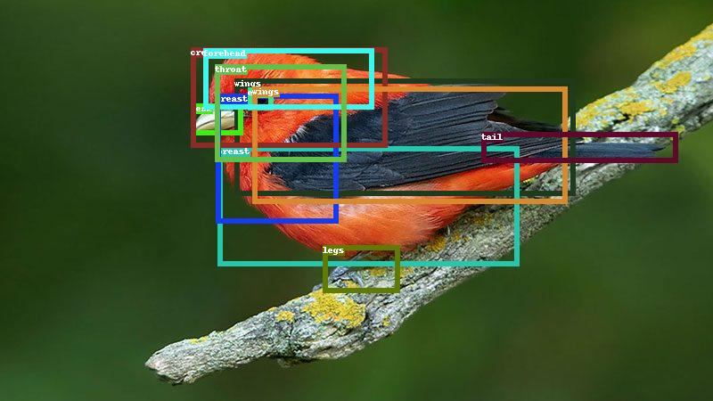

Featured Projects

OWL-ViT + Segment Anything
Combining OwlViT with Segment Anything - Open-vocabulary Detection and Segmentation (Text-conditioned, and Image-conditioned).
Project Page / Code

Multiple Object Tracking by Kalman Filter and Hungary Matching
Implemented by C++. Project using Background Subtraction Method, Kalman Filter, and Hungary Algorithm.
Project Page / Code
Multi-Agent for Instruction Following Navigation
Multi-Agent (2 robots) for Instruction Following Navigation task.
Project Page / Code